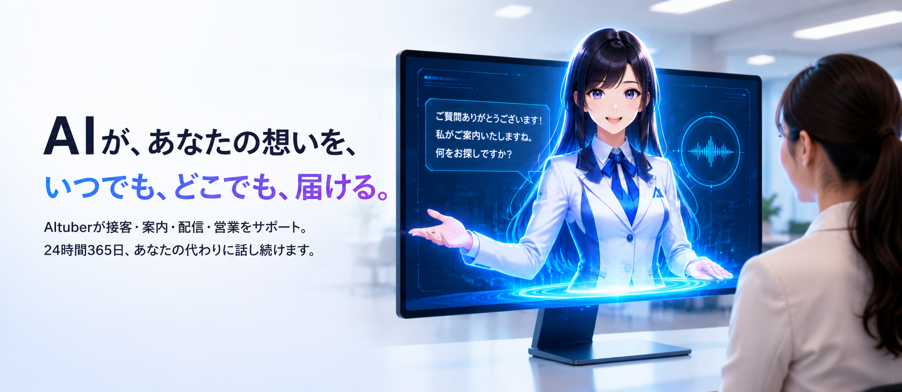
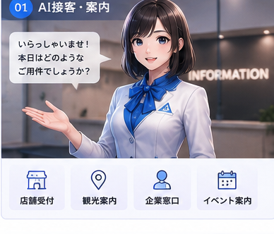
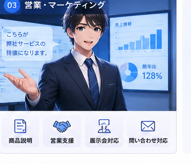
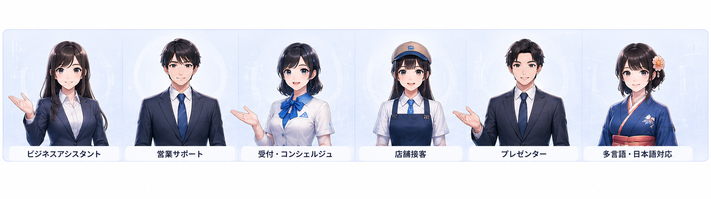

従来のチャットボットやFAQは、とても便利。でも・・・答えは返ってくるのに、どこか「冷たい」。
お客さまが本当に求めているのは、“正解”だけじゃなく、
ブランドとの「つながり」や「共感」です。人の心が動くのは、いつも“体温”のあるやりとりから。
こんにちは！○○AIスタッフです。気軽に質問してくださいね！
昼も夜もお休みなし。いつでもあなたのそばで、やさしくお手伝いします。
かたくならず、自然なおしゃべりで。お客さまとの距離を、やわらかくつなぎます。
手間もコストもぐっと軽く。売上アップまで、しっかり後押しします。
様々なシーンで、AItuberが活躍します


貴社専用のオリジナルAItuberを制作します。

ご相談から導入まで、やさしくサポートします。
活用したいキャラクターや、叶えたいことを、じっくりお聞きします。
キャラクターの性格や知識（FAQ・商品情報など）を、ていねいにAIへ覚えさせます。
テスト環境で対話の品質をチェックして、安心してリリースできます。
よくあるご質問
店舗受付や観光案内、企業の問い合わせ窓口、イベント案内、営業・マーケティングなど、人と接するさまざまな場面でご活用いただけます。
はい。貴社専用のオリジナルAItuberを、キャラクターのデザインから制作できます。既存のキャラクターIPを活用することも可能です。
はい。日本語はもちろん、多言語対応のAItuberもご用意できます。インバウンドや海外のお客さま対応にもお使いいただけます。
厳格なガードレール設定により、不適切な発言や競合他社への言及などを防ぐ仕組みを導入しています。安心してご利用いただけます。
要件によりますが、最短2週間程度でプロトタイプの構築が可能です。まずはお気軽にご相談ください。